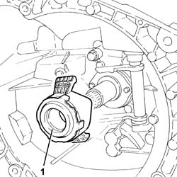

1820A30 thrust bearing - r + r with gearbox removed
- Path
- Procedures > 18 CLUTCH > 1820 CLUTCH RELEASE CONTROLS > 1820A clutch release mechanical control > 1820A30 thrust bearing - r + r with gearbox removed
- Kind
- repair procedure (removal / refitting; the operation number is the code)
- Applies to
- engines: 2.0 TS; all production periods
- Interactive page
- https://sloeber94.github.io/elrnDB-a147/en/#/3025107
Applies to: engines: 2.0 TS; all production periods; only with equipment: Cambio robotizzato
 Removing
Removing
 Refitting
Refitting1. Rotate the thrust bearing in a clockwise direction and remove it.

Applies to: engines: 2.0 TS; all production periods; only with equipment: Cambio robotizzato
Refitting
RemovingPlace the thrust bearing back in its housing.